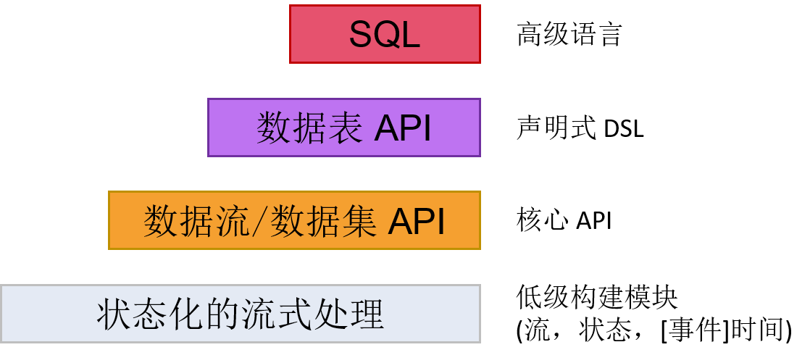

本文基于 Apache Flink 1.3 版本官方文档（https://ci.apache.org/projects/flink/flink-docs-release-1.3/concepts/programming-model.html）翻译。
| 目录 |
|---|
| 抽象层次 |
| 程序与数据流 |
| 并发数据流图 |
| 窗口 |
| 时间 |
| 有状态操作 |
| 容错性检查点 |
| 批处理操作 |
抽象层次
Flink 能够为流式计算或批处理应用提供多种层次的抽象接口。

-
最低级的抽象接口是状态化的数据流接口。这个接口是通过 ProcessFunction 集成到 数据流 API 中的。此类接口让用户可以使用连续的容错状态，并且可以不受限制地处理多个数据流中的事件。另外，用户也可以通过注册事件时间和时间处理回调函数的方法来实现复杂的计算程序。
-
实际上，大部分程序通常会使用以数据流 API（有界/无界数据流）、数据集 API（有界数据集）为代表的核心 API，而并不会使用前述低级抽象接口。这些核心 API 为数据处理提供了大量的通用构建模块，包括用户定义的各种各样的变换、连接、聚集、窗口、状态等等。在编程语言中，这些 API 处理的数据类型通常会表现为相应的类的形式。
由于数据流 API 集成了低级处理函数，因此可以通过数据流API为某些特定操作应用低级处理接口。此外，数据集 API 也为诸如循环、迭代之类的有界数据集提供了一些补充的编程原语。
- 数据表 API 是一种以数据表为核心地声明式 DSL，能够动态地修改那些表征数据流的表。数据表 API 的工作模式是一种（扩展的）关系型模型：每个数据表都依附于一个 schema（类似于关系型数据库中的表结构），相应的 API 就可以实现很多类似的操作，例如 select，project，join，group by，aggregate，等等。数据表 API 程序定义的仅仅是如何在逻辑上实现各种程序操作，而不是直接指定程序代码运行的具体步骤。尽管数据表 API 可以通过各式各样的自定义函数进行扩展，但是它在表达能力上仍然比不上核心 API，不过数据表 API 的优势是在使用上更简练（相对于核心 API 可以减少很多代码）。此外，数据表 API 程序在运行之前也会使用一个优化器对程序进行优化。
由于用户可以在数据表与数据流/数据集之间进行无缝切换，程序也可以混合使用数据表 API 和数据流/数据集 API。
- Flink 提供的最高级接口是 SQL。这个层次的抽象接口和数据表 API 非常相似，包括语法和接口的表现能力，唯一的区别是通过 SQL 查询语言实现程序。实际上，SQL 抽象接口和数据表 API 的交互非常紧密，而且 SQL 查询也可以在数据表 API 中定义的表上执行。
程序与数据流
Flink 程序的基础构建单元是（数据）流与变换（注意，数据集 API 中使用的数据集也是一种内置的流，这一点我们以后会细说）。顾名思义，一个数据流就是一组数据记录组成的（可能永远不会停止的）流，而变换就是一种接受若干数据流作为输入，然后再输出结果数据流的过程。
Flink 程序在运行的时候会被映射到数据流图中，这个数据流图就是由程序中的数据流和相应的变换操作组成的。数据流图开始于一个或多个数据源（source），结束于另外一些汇聚点（sink）。数据流图类似于有向无环图（DAG）。虽然可以通过迭代构造器生成某些特殊形式的环，但为了简化说明，大部分情况下我们不考虑这种结构。

通常情况下程序中的变换和数据流图中的运算符是一一对应的。不过有的时候也会出现一个变换由多个变换运算符组成的情况。
数据源和汇聚点的相关文档在数据流连接器和批处理连接器的说明文档中。变换的相关文档在数据流变换和数据集变换的说明文档中。
并发数据流图
本质上说，Flink 程序是分布式、并发执行的。在程序运行过程中，一个数据流可能会有一个或多个流分区，而一个运算符也可能会有一个或多个运算子任务。每个运算子任务与另外一个运算子任务之间都是相互独立的，他们是在不同的线程中运行的，甚至有可能所运行的机器或者容器都完全不同。
运算子任务的数量由运算符的并发数确定。数据流的并发数就是它所生成的运算符的个数。程序中不同的运算符可以有不同等级的并发量。

在两个运算符之间传输数据流既可以使用一对一的直接型模式，也可以使用重分发模式：
-
一对一 模式的数据流（例如上图中 Source 和 map() 运算符之间的数据流）中元素的分组和顺序会保持不变，也就是说，map() 运算符的子任务[1]所看见的元素与 Source 运算符的子任务[1]所生成的元素的顺序完全一致。
-
重分发 模式的数据流（例如上图中 map() 和 keyBy/window 运算符之间的数据流，以及 keyby/window 和 Sink 运算符之间的数据流）会改变数据流所在的分区。根据所选的变换的不同，每个运算子任务会将数据发送到不同的目标子任务中去。keyBy()（通过对 key 进行哈希计算来重分区）、boradcast() 和 rebalance()（随机重分区）就是重分发模式的几个例子。在重分发模式下，元素之间的先后次序在每对发送——接收子任务（例如 map() 的子任务[1]和 keyBy/window 的子任务[2]）中是保持不变的。因此，在上图的例子中，尽管在子任务之间每个 key 的顺序都是确定的，但是由于程序的并发过程引入了不确定性，最终到达 Sink 的元素顺序就不能保证与一开始的元素顺序完全一致。
关于配置并发的更多信息可以参阅并发执行文档。
窗口
计数（counts）、求和（sums）等聚合事件和批处理过程的工作模式完全不同。举个例子，由于数据流在理论上是无限的，因此直接计算数据流中的所有元素的个数基本上是无法实现的。因此，数据流的聚合操作（计数、求和等）都是由窗口（window）限定了范围的，例如“计算前五分钟的元素个数”，“对前100个元素求和”等。
窗口可以通过时间（例如以30秒为单位）或者数据（例如以100个元素为单位）来定义。有多种不同类型的窗口，例如数据不重叠的滚动窗口（tumbling window）、数据重叠的滑动窗口（sliding window），以及以非活动状态为间隔的会话窗口（session window）。

这篇文章介绍了很多窗口的例子。另外，也可以查阅窗口文档了解更多内容。
时间
流式计算程序中的时间概念（例如在定义窗口时经常会用到时间）有以下几种含义：
- 事件时间（Event Time），是指事件创建时的时间。这种类型时间一般会表示为事件的时间戳，再通过事件生成传感器或者事件生成服务等附到事件中。Flink 通过时间戳指定器获取事件的时间戳。
- 摄入时间（Ingestion Time），是指事件在源运算符中进入Flink的数据流的时间。
- 处理时间（Processing Time），是指运算符在执行时间类操作时的本地时间。

关于处理时间的更多信息请参阅事件时间文档。
有状态操作
虽然数据流中有很多运算符每次只需要考虑当前所处理的唯一的事件（例如事件分析器），但是仍然存在很多需要记录多个事件的信息的场景（窗口操作符就是个很好的例子），这种需要记录信息的操作就称为有状态的操作。
有状态操作的状态可以理解成是以键值对（key/value）形式储存的。这个状态的分区和分发过程是和数据流严格绑定在一起的，随后有状态运算符读取数据流就可以获取状态了。因此，在 keyBy() 函数执行之后，只能在带键的数据流中访问 key/value 状态，而且也只能获取与当前事件的主键相对应的值。数据流的键和值的对应确保了所有状态更新都是本地操作，同时也保证了事务的一致性。这个对应也使得Flink可以透明地重分发状态，并调整数据流地分区。
有关状态地更多内容请参阅有状态操作文档。
容错性检查点
Flink 通过数据重发和校验检查机制相结合的方式实现了容错能力。检查点和运算符中的相应的状态一样直接关联到输入数据流中的特定的某个点。为了维护数据一致性（一次处理的语义），可以让数据流从检查点恢复，这是通过恢复运算符的状态并对检查点对应的事件进行重发的方式实现的。
检查点区间是对程序的容错能力与恢复时间（需要重发的事件数量）的折衷。
容错区间文档中有关于Flink如何处理检查点以及其他相关主题的详细说明。更多关于配置启用检查点的资料请参阅检查点API文档。
批处理操作
Flink 将批处理程序看成流式计算程序的一种有界数据流（即元素数量是可数的）的特例。这里，数据集（DataSet）也被看作一种数据流。因此，上面流式计算程序中的很多概念也能应用到批处理程序中，除了以下几处不同：
Comments
comments powered by Disqus